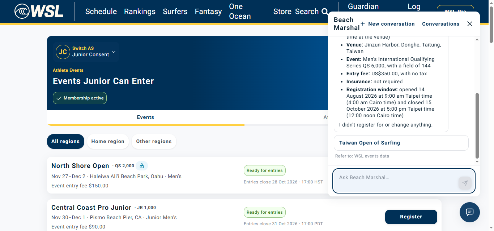

# Taiwan Open of Surfing — assistant lookup investigation The issue reproduces on dev. The assistant can read this exact event through `get_event_for_entry`, but cannot discover it through `list_enterable_events`. This is an application integration failure in the list path, not an inability to understand the event name. The original BM-LIVE-A11 check remains failed. ## Actual checks 1. Signed in through the normal athlete login and repeated the original question. `list_my_athletes` returned the correct Junior Consent athlete. `list_enterable_events(athlete_id=01a13c43-c421-74a4-b266-58d419d278a3, scope=all)` returned `unavailable`. The assistant HTTP request itself completed with HTTP 200; that does not mean its data tool succeeded. 2. Read the normal `/api/events?athlete=...&scope=all` endpoint three times under the same account. All returned HTTP 200 and included Taiwan event `01a136e0-ce4a-70ba-907d-453ccfb5e318`. End-to-end request times were 1345, 476 and 389 ms; these are not internal NATS tool timings. 3. Started a separate assistant conversation supplying that exact event ID and asking for a read only. `get_event_for_entry` returned `ok`. The response correctly identified 14–22 November 2026, Jinzun Harbor in Taitung, Taiwan, USD 350, field size 144 and no mandatory insurance. Entries are closed; the stored closing time is 15 October 2026 at 09:00 UTC / 17:00 Taipei. That closed status does not explain the list tool's unavailable response: the normal API includes the event. ## Source trace and limits Both the normal Events API and AI list gateway call `svc.athlete.event.list` with the athlete ID and scope. The direct single-event lookup uses a different competition request. The successful direct lookup explains why other event reads may work while discovery fails. In the inspected AI source, `AthleteGateway.list_enterable_events` validates `AthleteEventsReply` and converts every returned event through `entry_event`. Its tool wrapper turns a timeout or unexpected exception into `unavailable`; the RPC helper also maps service failures to that result. Consequently, a response-model mismatch, a conversion exception on any list item, an RPC failure or a time-budget expiry can all produce the same observed answer. A bad item elsewhere in the list could affect Taiwan discovery; this is a hypothesis, not a verified malformed record. The inspected AI default tool timeout is 1.5 seconds; the BFF RPC default is 2 seconds. This difference is a candidate to investigate, not proof of a timeout. The working HTTP timings do not establish AI-side execution time. The inspected source checkout is not independently confirmed as the deployed revision. No live dev log access was available in the current session: kubectl has no configured context, and the existing AWS browser endpoint contains only Chrome's introduction page, with no authenticated console/CloudShell session. No local service logs were substituted for dev logs. ## Developer next steps Use the captured assistant run ID `53599bc7-604d-427b-9172-0898bab29713`, conversation `d6ba74c4-12a6-45b7-bc13-dd21913e7785`, and timestamps in the execution log to locate the AI tool failure and corresponding athlete-service request. Check for `tool list_enterable_events failed: <exception type>`, tool duration/outcome and RPC timeout/error. Compare the deployed messaging schema with the returned event-list payload, including conversion of each item. Fix the verified cause; do not increase timeouts without timing evidence. Add an adapter regression test with the real sanitized failing payload once available. A product fallback could allow resolving an event directly when list discovery is unavailable, while explaining that athlete-specific eligibility has not been verified. The direct lookup's success does not establish eligibility or permission to register. Evidence: `artifacts/beach-marshal-live-2026-10-15/action-log-taiwan-investigation.json` and `taiwan-isolation.json`, with actual screenshots and original browser videos. No application logic or event data changed. Nothing was published.
This separate diagnostic does not replace or pass the failed discovery check. The recording includes normal login and three read-only API comparison calls before the assistant prompt; browser content is recorded without Chrome toolbar.

Discovery execution evidence · Exact-ID lookup and comparison API evidence